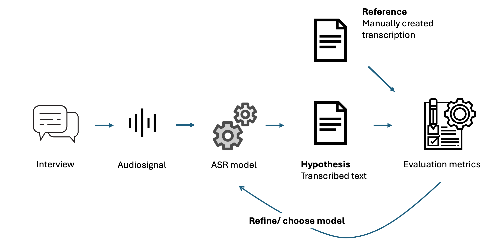
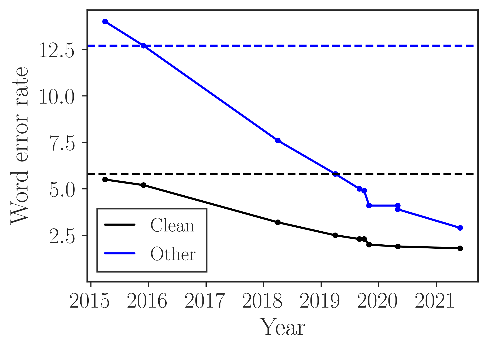
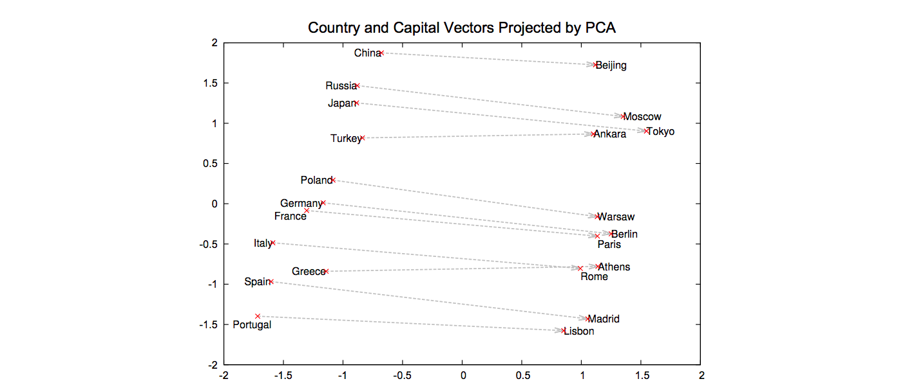
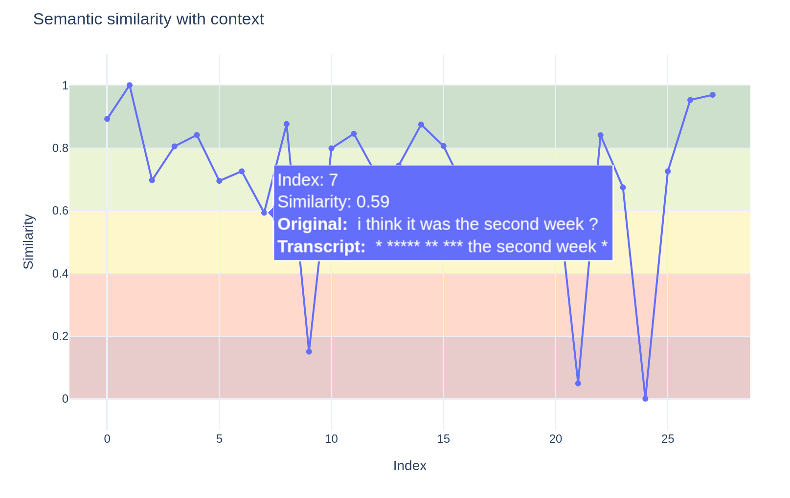

Evaluating Automatic Speech Recognition (ASR) for Social Science Research: A Comparison of Semantic Metrics
conference programm: ESRA Conference.
presentation slides: Slides.
Introduction
This July, our team attended the ESRA conference in Utrecht (NL) and gave two talks about our intermediate findings. In the following, I will outline the main arguments on what needs to be considered when using transcription models for social science research. If you are interested in synthetic data generation with LLMs—a topic that was also widely discussed at the conference—you should take a look at our talk on Silicon Interviews.
Task definition
In our research project, we conduct interviews with German-speaking children aged 8 to 16 and their parents. The children are first asked to assess their health on a scale and then to explain their reasoning. Our sociological research interest is to illuminate children’s self and proxy-rating strategies. At the same time, as part of the New Data Spaces program of the DFG, we pursue a second goal: finding new ways to semi-automate the traditional research process by employing state-of-the-art technologies.
This brings us to the main topic of this write-up: given the recordings of our interviews, can we simply use a recent ASR model to transcribe them, or do these models produce errors that are unacceptable for our downstream task? And how can we even evaluate this? We are convinced that this question is relevant not only for our research, but also for a broad range of studies that deal with audio data of any kind.

Before exploring the possibilities for answering this question, I will briefly introduce the most important terminology. ASR (Automatic Speech Recognition) refers to the broader task of extracting human utterances from a speech signal. This concept includes various interrelated subtasks, such as Speech Recognition, Speaker Diarization, Speaker Detection, Language Detection, and Transcription. In the following, we will mainly focus on the transcript as the final result of the pipeline. This is partly because current transformer-based neural networks such as Whisper combine many of these tasks in a single model, allowing us to focus on the outcome.
We call the transcript produced by the model the hypothesis, which we aim to align with a reference—a transcribed version we consider complete.
Performance of current ASR Models
One might ask: Isn’t ASR a solved task? A glance at the following figure might suggest exactly that:

It shows declining error rates over time. Notably, the dashed horizontal lines represent human reference scores for this dataset. On LibreSpeech (read English speech), ASR models have matched or even out-performed humans for years.
However, there’s more to the story when we change the context. Consider a table from the Whisper paper by Radford et al. (2022), which reports WER on the VoxPopuli corpus—European Parliament recordings:
| Model | Czech | German | English | en_accented | … |
|---|---|---|---|---|---|
| Whisper tiny | 73.5 | 27.4 | 11.6 | 18.8 | … |
| Whisper base | 54.7 | 20.6 | 9.5 | 17.5 | … |
| Whisper small | 28.8 | 14.8 | 8.2 | 19.2 | … |
| Whisper medium | 18.4 | 12.4 | 7.6 | 19.1 | … |
| Whisper large | 15.9 | 11.9 | 7.2 | 20.8 | … |
| Whisper large-v2 | 12.6 | 11.2 | 7.0 | 18.6 | … |
Even though the same error rate metric is used as in the previous plot, the overall error here is much higher. This difference simply comes from a change in setting. Instead of read English speech, the VoxPopuli dataset covers European Parliament event recordings. In addition to the higher baseline, the individual error rates also vary dramatically. If there is an accent in the English speech, the average error rate rises to 18.6 for the best-performing model. This translates to almost every fifth word being incorrectly transcribed. For our target language, German, we can also see that the errors are generally higher.
So what now? How can we know if ASR errors are acceptable for our downstream task? To find an answer to this question, we first need to take a look at different error metrics.
Error Metrics for ASR evaluation
As we have done so far, one way to judge the quality of ASR models is by using error metrics. The most common reference metric for this task is the Word Error Rate (WER). It is computed based on an aligned version of the reference and the hypothesis as follows:
WER = \frac{\text{Substitutions} + \text{Deletions} + \text{Insertions}}{\text{Total Number of Words}}
In the following table, we can see two examples of substitution errors. In both cases, a word from the reference (ground truth) was incorrectly transcribed by the ASR model:
| System | Transcription | WER (%) |
|---|---|---|
| Reference | Find me flights to London | 0.0 |
| ASR 1 | Find the flights to London | 20.0 |
| ASR 2 | Find me flights to Lisbon | 20.0 |
The first model substituted “me” with “the,” which is one error out of five words in total, yielding an error rate of 20%. The second hypothesis gives the same error rate by incorrectly transcribing “Lisbon” instead of “London.”
This simple example shows some shortcomings of WER. Most importantly, the equal weighting of all words does not allow us to judge the completeness of the transcript with respect to the task at hand. For example, if we were researching personal pronouns, ASR 1 would yield a task-specific error rate of 100%. If we were trying to identify flight destinations, ASR 2 would yield a task-specific error rate of 100%.
To tackle this problem, alternative metrics have been proposed in the literature. Next, we will take a brief look at the ideas behind them and how they can help us achieve our goal: assessing whether ASR models are useful for automatically transcribing our interviews.
Semantic Metrics
In general, we can identify two ways to obtain more meaningful metrics. The first way is to improve the word error rate by weighting different classes of errors differently. For example, we could assign higher error penalties when nouns are incorrectly transcribed and lower penalties when articles are incorrect.
Instead of this approach, there are also metrics that move away from measuring lexical errors altogether. These use so-called word embeddings to compare whether the reference and hypothesis align semantically.
We will discuss one representative from each group to get a better sense of what they can tell us about transcription quality. It is worth noting that we set up these meta-categories to better understand what the metrics do, but the different representatives within these categories still share common principles, such as alignment and embedding strategies.
Weighted WER
A good example of the weighted WER is the Semantic-WER by Roy (2021). It uses a sophisticated ruleset for each of the WER error types (Substitution, Deletion, Insertion). This formula is taken from Roy (2021) page 2:
W_{\text{sub}} = \begin{cases} {1,} & {\text{if } r_w \in \text{NE} \cup \text{SENT}} \\ \text{cer}(r_w, h_w), & \text{if } r_w \in \text{SE} \\ \dots &\\ \end{cases}
Just looking at one of these rulesets for substitutions, we can see that different kinds of words are assigned different error weights. If the reference word (r_w) substituted by another word was a named entity (NE) or a sentiment word (SENT), an error of 1 is assigned. This rule, for example, ensures that substitution of place names such as “London” contributes to a higher overall error.
The second case accounts for spelled-out entities (SE), for example in telephone interviews, where we compute how many characters are incorrect using the character error rate between reference and hypothesis (cer(r_w, h_w)).
The list goes on, but from here the idea should be clear. Another simpler way to weigh errors is used by the Embedding Error Rater (EmbER) by Roux et al. (2022), which weighs errors by distance in embedding space.
Semantically based Error Rates
Moving away from comparison based on alignment at the lexical level, the BERTScore by Zhang et al. (2020) first embeds every single token of the reference and hypothesis using a BERT encoder. This approach leverages the idea that in the embedding space, similar words tend to be closer to each other. Similarity is assumed to be reflected across multiple dimensions—not only lexical or grammatical ones.
For example, in the following projection of an embedding space, the relationship between countries and their capitals is reflected, along with some notion of geographical proximity.

{kind=link}
After obtaining the embedding vectors, BERTScore aligns reference and hypothesis tokens based on proximity in embedding space. Then, token-based cosine similarity is used to compute a similarity score between aligned tokens. This similarity is weighted by TF-IDF (Term Frequency-Inverse Document Frequency) to give more importance to terms that are more characteristic of the document.
This idea is also employed by several other metrics that differ slightly in implementation. The Semantic Distance (SemDist) by Kim et al. (2021) uses sentence-level embeddings. The Aligned Semantic Distance (ASD) by Rugayan, Salvi, and Svendsen (2023) applies character-level alignment and weighs edit-level errors by semantic proximity of segments. The SeMaScore by Sasindran, Yelchuri, and Prabhakar (2024) uses dynamic programming for alignment, proceeding in a similar way as ASD. These are just a few examples highlighting key differences in semantic error metrics.
Our proposal: Visually aided Semantic Evaluation
After reviewing various error metrics, the key question remains: can they truly help us evaluate transcription models for our specific needs? While it’s valuable to assess transcripts beyond just lexical accuracy—and combining different metrics can reveal the types of errors—looking at scores aggregated over an entire transcript only gives a general, averaged picture. It doesn’t show us where or how the errors happen throughout the interview.
To overcome this limitation and give researchers deeper insight into transcript quality, we developed a notebook that tracks errors over time—that is, across the length of the transcript.

Specifically, we chunk a transcript into segments and measure the error for each segment based on similarity in embedding space. This approach enables interactive investigation of how errors vary throughout the transcript. It also helps identify problematic parts of the data.
In the example figure, the first part of the transcript is missing, which could be caused by poor audio quality or background noise during that segment.
Lessons Learned and future Directions
This article began by introducing the ASR task and reviewing the performance of current models. We then highlighted that the question of “how good” an ASR system is always depends on the specific goals you want to achieve—there is no one-size-fits-all criterion, especially considering the inevitable trade-offs between different types of errors.
To better assess how suitable ASR models are for your data and research questions, we proposed several metrics that go beyond the classic WER. Additionally, we provided code to move from global summary scores toward interactive, segment-level analysis of errors.
Based on our work, we propose the following guidelines for evaluating ASR in social science research:
- Evaluate according to your task: Before starting, identify which aspects of the transcript are critical to answering your research questions.
- Combine different error metrics: Use multiple metrics to get a fuller picture of transcript quality.
- Interactively analyze error classes: Explore where and what kinds of errors occur within transcripts to understand their impact.
From applying these evaluation steps to our pre-test data, we learned several important lessons for the upcoming field phase:
- Audio quality is crucial: Aim for the best possible recording conditions, as some audio artifacts may not be noticeable to human listeners but can significantly degrade ASR performance.
- Overlapping speech degrades transcripts: In interview settings, overlapping talk strongly reduces transcript accuracy.
- Creating a reliable ground truth is challenging: Preparing human-annotated transcripts is notoriously difficult and some observed errors may actually stem from annotator oversights.
- Model adaptation can help: Fine-tuning or prompting ASR models for specific speaker groups may improve results. Transformer-based models like Whisper tend to produce overly polished transcripts, smoothing out dialects, interjections, and slips of the tongue, which might be important for your analysis.
A more detailed report on our transcription experiements will be published soon.